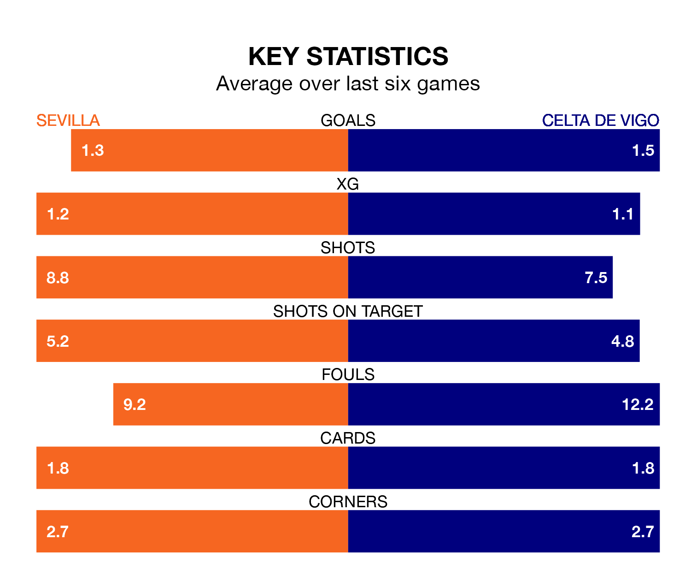

Sevilla host Celta de Vigo on Sunday at the Estadio Ramón Sánchez Pizjuán in La Liga.
In their last league match, on Monday, Sevilla drew with Almería 2-2 away, with goals from Dodi Lukebakio and Lucas Ocampos.
Celta lost, 4-0 away at Real Madrid on March 10.
In the last 10 years, Sevilla and Celta have played each other on 22 occasions. Sevilla won nine of them, Celta five, and they drew eight times.
On average, Sevilla scored 1.6 goals and Celta 1.3 in those matches.
Their last meeting was on November 4, when they played out a 1-1 draw.
Celta are 17th in the table after 28 games, of which they have won five and drawn nine, earning 24 points.
Sevilla are three places ahead of the away side in 14th, with six wins and 10 draws putting them on 28 points.
With 30 goals in 28 games so far this season, Celta are scoring at below the league average rate with 1.1 goals per game. And they are conceding more than average, letting in 43 goals at a rate of 1.5 per game.
The hosts are also below average scorers, with 1.2 goals per game, compared to a league average of 1.3. They have conceded 1.5 goals per game.
Sevilla are in reasonable form in La Liga, with three wins and two draws from their last six games.
With two wins and a draw over that period, Celta's form is worse – they have taken seven points from 18, compared to Sevilla's 11.
Sunday's match will be refereed by Francisco José Hernández Maeso, who has taken charge of 13 La Liga games so far this season, issuing one red card and booking 69 players. He has awarded four penalties.
The last Sevilla game Hernández Maeso refereed was a 2-1 away win against Rayo Vallecano on February 5. He is yet to oversee a match featuring Celta this season.
Updated: 15:10 (UTC), 15/03/24